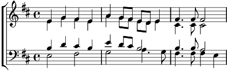

Angelus Domini
Si mineur
Musique: Michel Corboz

Angelus Domini, (2x)
[SA] Angelus Domini descendit de caelo (2x)
Et dixit mulieribus:
Alleluia (19x)
[TB] Angelus descendit de caelo
Et dixit mulieribus:
Quem quaeritis, surrexit, sicut dixit.
Alleluia (13x)